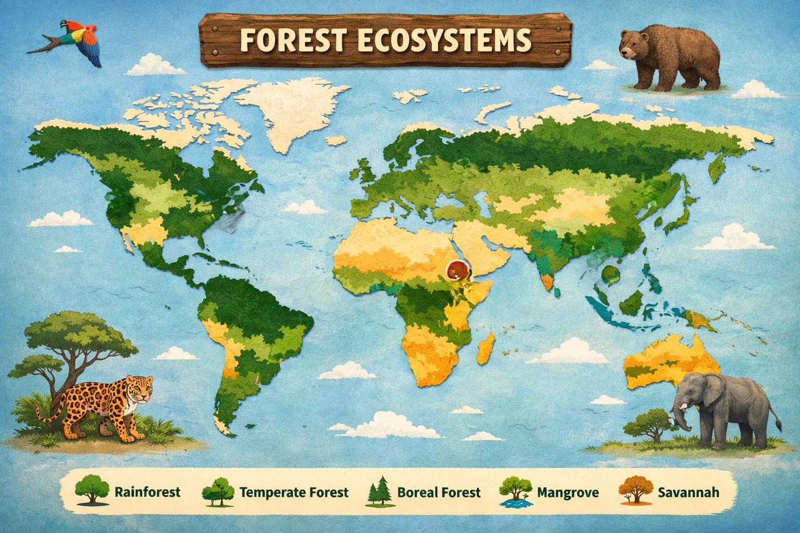

Explore about forests and become a Forest Guardian!
A forest ecosystem is a natural system made up of trees, plants, animals, microorganisms, soil, water, and climate interacting together. Forests are one of the most important ecosystems on Earth.
They provide oxygen, store carbon, support biodiversity, and help regulate climate and water cycles.
Forests are classified based on climate and location.
Forests have different layers that support life.
Forests are home to more than 80% of terrestrial species. This includes plants, mammals, birds, insects, fungi, and microorganisms.
Forests act as carbon sinks by absorbing carbon dioxide and releasing oxygen. They help reduce global warming and stabilize temperatures.
Dead leaves and plants decompose on the forest floor, enriching the soil with nutrients needed for plant growth.
Energy flows from producers to consumers and decomposers.
Deforestation is the large-scale clearing of forests for agriculture, urbanization, logging, and mining.
Forest degradation occurs when forest quality declines due to pollution, invasive species, overgrazing, or unsustainable use.
Afforestation is planting trees in new areas, while reforestation restores forests that were previously destroyed.
Answer all questions. Score 4 or more to unlock your Forest Guardian Badge 🌳
1️⃣ What is a forest ecosystem?
2️⃣ Which layer of the forest receives the most sunlight?
3️⃣ Forests help fight climate change by?
4️⃣ What is deforestation?
5️⃣ Which action helps protect forests?
Manage the forest wisely for 7 years. Every decision affects trees, animals, and climate.
📅 Year: 1 / 7
🌲 Forest Health
100%
⭐ Score: 0
Click on the red markers to see the forest details and its animals.

You scored /5
Congratulations! You are now an Ecosystem Warrior. Keep protecting our planet 🌍